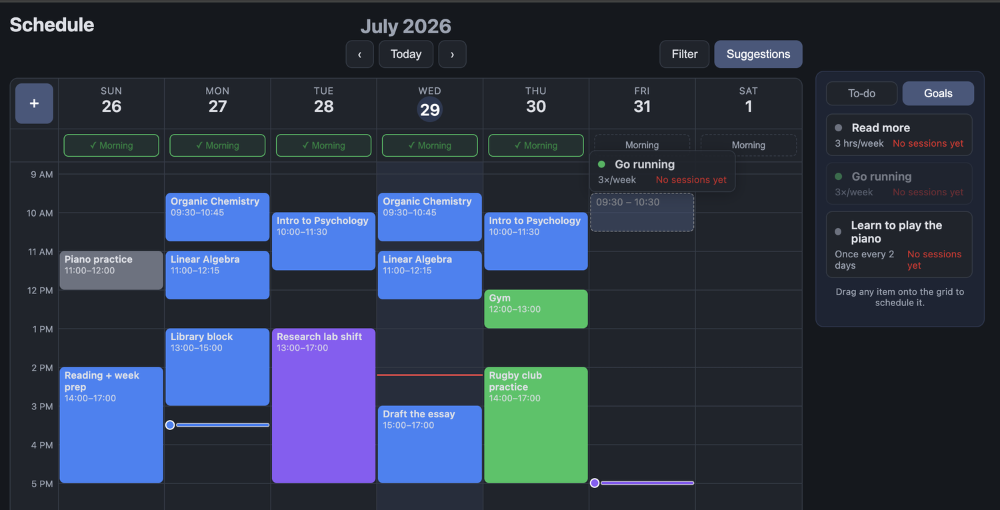
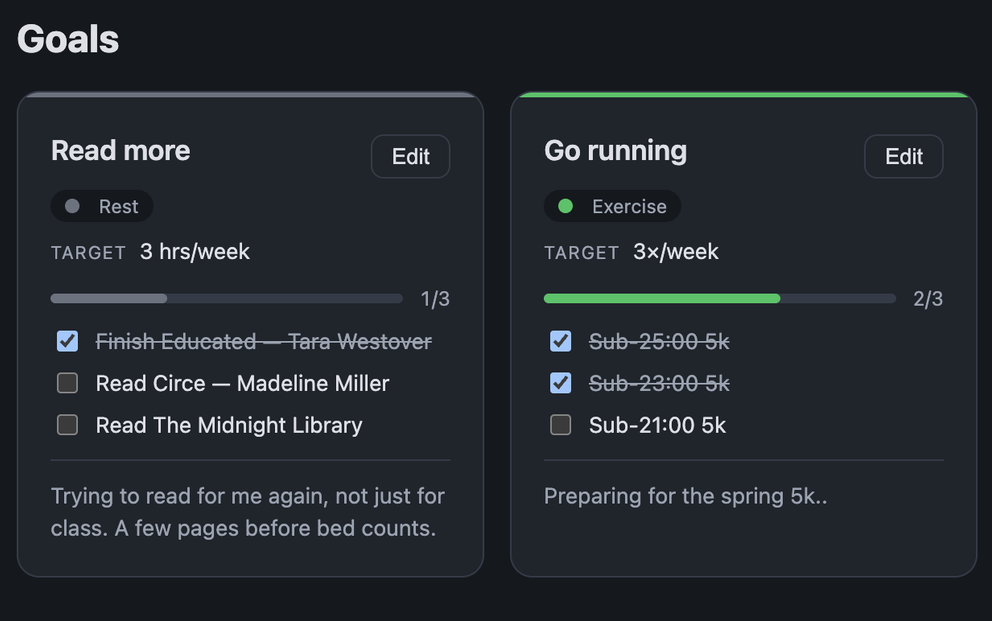
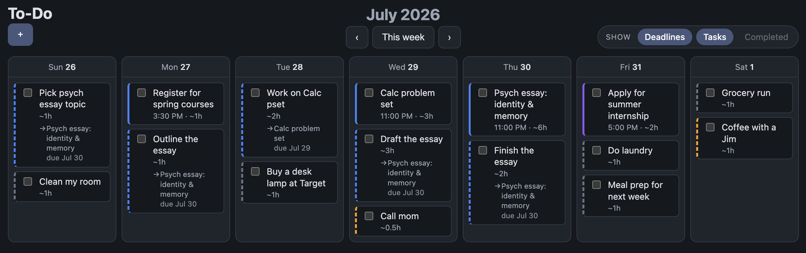
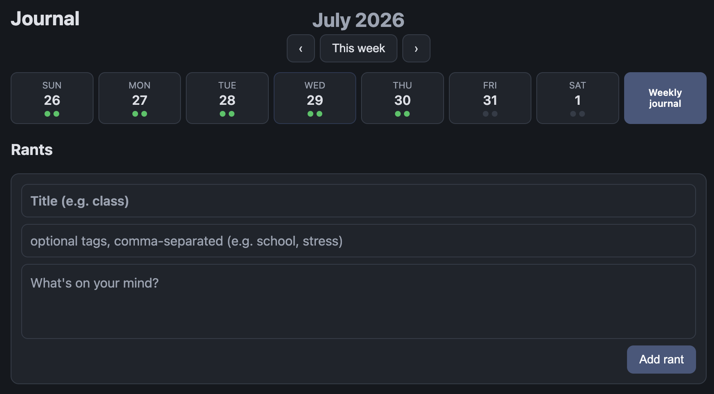

Schedule · Deadlines · Goals · Journal
All your days, in one place.
Every upcoming event, deadline, and goal together, so planning your week actually holds together — and so you stay pointed at the things you set out to do.
Then Daybook does something a planner can’t: it lines your days up against your journal, to show you how what you do shapes how you feel.
The demo is the real app with an example week in it. Nothing to sign up for.
Here’s what’s inside — take the demo for a spin as you scroll.

Your week, the way a calendar should feel.
Drag anywhere on the grid to block out time — no forms, no fuss. Colour-code by the kind of time it is, set it to repeat, and rate how it actually felt afterward.
Planning the week? Open Suggestions and your unscheduled to-dos and goals sit right beside the calendar — drag one onto a day and it becomes real time on your schedule. The gap between “I should” and “it’s planned” disappears.
Keep the big things from slipping your mind.
Set the goals you care about — read more, run faster, learn an instrument — and track them in the shape you actually think in: twice a week, once every three days, a few hours. Break each one into milestones and watch the bar fill as you go.

Deadlines up top, the work that gets you there beneath.
A hard deadline and the steps to reach it aren’t the same thing, so they don’t look the same here. Your essay is due Thursday; the outline, draft, and finish tasks that build toward it link right back to it. See the whole path, not just the due date.

And quietly, it learns what a good week looks like for you.
A quick check-in each morning and night — plus space to write freely when a day needs more than a number — sits right alongside what you actually did. Over a few weeks the pattern surfaces: which activities lift you, which drain you, how much sleep your good days really need. Not generic advice. Your own days, telling you what works.

Also inside
-
Sleep & Workouts
Bring in your Oura sleep scores and your Strava workouts, so the record of your week includes the parts you didn’t plan.
About
Daybook started from a small, personal frustration: the instinct to reach for my phone in every spare moment, when what I actually wanted was a nudge toward the things I’d told myself mattered. So I built the thing I wished existed — a single place to keep yourself organized and your mind focused on what’s important to you.
Made by Adrien Tabor — adrien.tabor@tufts.edu.